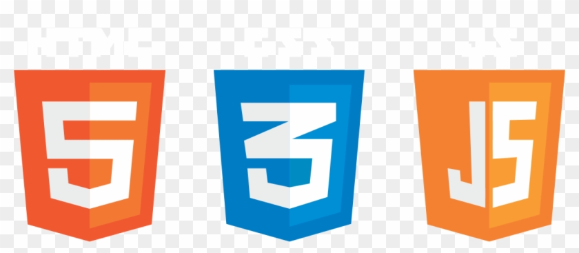

Diseño Web
Me encanta el diseño web. He tocado un poco de css3, html5 y algo de javascript. Cada día pretendo aumentar un poquito más mis conocimientos, que luego comparto con mis alumnos.
< Siempre aprendiendo >
Montaña
Me encanta salir a hacer rutas por la sierra. Es maravilloso estar rodeada de árboles, aire fresco y naturaleza. Sentir esa sensación de euforia y libertad cuando llegas a la cima...
< Próximo objetivo... el Mulhacén >

Animales
Cuido, junto con mi hija de una mascota llamada Sara. Es una conejita blanca y negra. La cepillamos, le damos su comida, la llevamos al veterinario...y, de vez en cuando la llevamos al parque donde corretea a sus anchas.